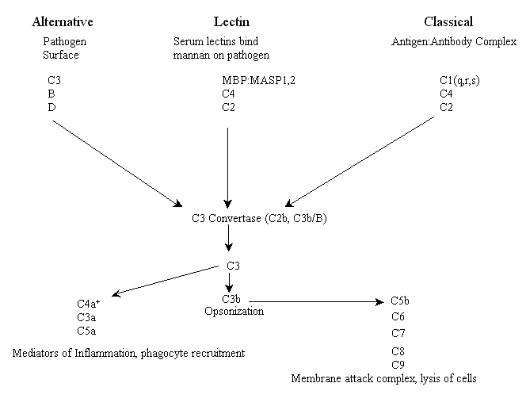

¿Es el Sistema Complementario Irreduciblemente Complejo?
por Mike Coon
"Por complejidad irreducible entiendo un sistema único que está compuesto por varias partes interactivas que contribuyen a la función básica, y donde la eliminación de cualquiera de las partes hace que el sistema deje de funcionar efectivamente. Un sistema irreduciblemente complejo no puede ser producido gradualmente mediante modificaciones sucesivas y leves de un sistema precursor, ya que cualquier precursor de un sistema irreduciblemente complejo es, por definición, no funcional."
-- Michael Behe
Este ensayo tiene como objetivo respaldar algunos elementos del excelente FAQ de Keith Robison que detalla las deficiencias de los argumentos de Behe (http://www.talkorigins.org/faqs/behe/review.html). Otra excelente refutación por parte de H. Allen Orr puede encontrarse en http://bostonreview.net/br21.6/orr.html. Véase también http://bostonreview.net/evolution.html para varios artículos sobre diseño inteligente y complejidad irreducible por Orr, Russell F. Doolittle, Douglas J. Futuyma, Richard Dawkins, Michael Behe, Phillip Johnson y David Berlinski, entre otros.
Muchas personas en Talk.Origins (T.O.) y en otros lugares han esbozado las razones conceptuales por las que la evolución darwiniana puede producir sistemas complejos irreduciblemente (complejidad irreducible o IC). Aquí intento presentar algunas pruebas para respaldar estos conceptos. En el FAQ de Robison, mencionó que no sabía si el sistema del complemento mostraba un sistema de cascada que varía evolutivamente. Tal variabilidad a través de líneas filogenéticas ilustraría la falacia central detrás del concepto de complejidad irreducible de Behe. Dicha falacia surge de la incapacidad de ver que lo que ahora parece complejidad irreducible es simplemente el resultado de la evolución darwiniana mediante la cual las características que una vez fueron meramente útiles ahora son esenciales. A continuación, intento abordar el punto de Robison y mostrar cómo el sistema del complemento falla la prueba de Behe.
Por cierto, un punto que Robison hizo en su FAQ fue en refutación a la afirmación de Behe de que los anticuerpos no pueden funcionar por sí solos, y por lo tanto son IC. Behe está equivocado al menos en la medida en que los anticuerpos sí tienen funciones aparte de el papel que desempeñan en la cascada del complemento. Incluso hay alguna evidencia de que los anticuerpos tienen una función fuera de su papel convencional de "etiqueta molecular". No entraré en detalles aquí, pero un buen ejemplo sería el hecho de que los anticuerpos pueden ser catalíticos. Es decir, pueden funcionar no solo como etiquetas moleculares en patógenos, tumores o células infectadas por virus, sino que pueden tener funciones enzimáticas que son bastante independientes de sus principales roles inmunológicos (véase, por ejemplo, Barbas1).
Primero, una breve revisión del sistema del complemento2
En 1899, el belga Jules Bordet descubrió que el suero contenía dos componentes: uno estable al calor que tenía la actividad de aglutinación y precipitación, posteriormente identificado por Paul Ehrlich como anticuerpos, y otro inestable al calor que era responsable de la lisis bacteriana. Sin embargo, no fue hasta la década de 1950 cuando se elucidó el primer sistema de proteínas del suero inestables al calor (más de 30 han sido identificadas desde entonces) cuya función servía para complementar la acción antibacteriana de los anticuerpos. Incluso antes, aunque poco comprendido, el papel de las proteínas del suero inestables al calor fue notado por primera vez en los primeros intentos de transfusiones de sangre y estas observaciones pueden ayudarnos a comprender cómo funciona el complemento.
La mayoría de la gente sabe que una de las partes más importantes de nuestro sistema inmunológico es un tipo de proteína llamado anticuerpo. Una célula inmunitaria especializada llamada célula B produce anticuerpos. Las células B son linfocitos que desempeñan roles clave en la erradicación de infecciones. Principalmente, se desarrollan en un tipo de célula conocido como célula plasmática que produce grandes cantidades de anticuerpos, aunque también desempeñan un papel como células presentadoras de antígenos y en el reclutamiento de células T. Nuestros anticuerpos se fabrican con mayor frecuencia para reconocer patógenos invasores y, por lo tanto, no son dañinos para nosotros. Pero a veces los anticuerpos pueden causar daño y los clínicos se refieren a una forma en que esto ocurre como la reacción hemolítica de la transfusión, que a menudo es fatal. El escenario más común, aunque hoy en día es raro, es la transfusión de sangre tipo A en un individuo tipo O. El receptor tipo O produce anticuerpos contra los glóbulos rojos del donante tipo A. Poco después de la transfusión, el receptor desarrolla escalofríos, fiebre, urticaria y sangrado descontrolado. El plasma del receptor es rosado, debido a la fuga de hemoglobina desde los glóbulos rojos del donante. La sangre se agota de factores de coagulación, porque el sistema de coagulación ha sido activado y se forman coágulos de sangre de manera difusa dentro de la circulación.
Sin embargo, resulta que la unión del anticuerpo a las células rojas del tipo A no las daña. Si mezclamos células rojas suspendidas en solución salina con anticuerpo puro, las células se aglomeran, pero no liberan hemoglobina. Cuando se añade plasma sanguíneo a las células aglomeradas, las células se lisan, o estallan, y si administramos el plasma de nuevo a un receptor (en un modelo animal), replica las otras características de una reacción transfusional hemolítica. Claramente, algo en el plasma está produciendo estos efectos, no el anticuerpo. Esta actividad se denominó "complemento" porque complementa la acción del anticuerpo. Ahora sabemos mucho sobre la composición y la función de esta importante función inmune y hemos identificado tres formas en las que el complemento puede eliminar patógenos invasores.
Las proteínas del complemento activadas inician una cascada de reacciones enzimáticas que finalmente resulta en un gran agujero literalmente perforado a través de la membrana del microorganismo invasor, o en la reacción hemolítica de la transfusión, en los glóbulos rojos. Nuestras propias células están protegidas de las vías del complemento activadas espontáneamente (véase más abajo) porque poseen otras proteínas que inactivan la cascada del complemento. No es sorprendente que algunos microorganismos hayan evolucionado una estrategia de defensa que implica la presencia de sus propios inhibidores de cascada. Pero la mayoría no tiene esta defensa y el complejo proteico que perfora el microorganismo, llamado perforina, crea un gran poro en la membrana del patógeno. Esta pérdida de integridad de la membrana destruye la capacidad del patógeno para controlar la concentración de sales dentro de sí mismo, matándolo así.
Nuestras funciones efectoras complementarias sirven como brazos tanto del sistema inmunitario adaptativo como del innato. El sistema inmunitario innato se encuentra en todos los organismos multicelulares, mientras que la inmunidad específica (o adaptativa) solo se encuentra en los vertebrados, con la excepción de los agnatos, o peces sin mandíbula. Los receptores de antígeno en el sistema innato están codificados en la línea germinal y reconocen estructuras ampliamente homólogas (generalmente esenciales) compartidas por grupos de microbios. El sistema inmunitario adaptativo, sin embargo, desarrolla su repertorio de receptores de antígeno mediante mutaciones somáticas y muchos de los determinantes reconocidos por estos receptores de antígeno son idiosincrásicos (generalmente no esenciales y, por lo tanto, mutables) para un microbio en particular. El sistema inmunitario innato, a diferencia de la inmunidad específica, no desarrolla memoria. Ambos sistemas tienen la capacidad de distinguir lo propio, pero el sistema inmunitario específico es imperfecto en este aspecto, lo que resulta en autoinmunidad.
Las tres vías del complemento son armas que un organismo puede utilizar para ayudarle a combatir patógenos, destruir tumores y eliminar células infectadas por virus. Se conocen como las vías lectina, alternativa y clásica (existen algunas variaciones menores en algunos organismos). La vía de la lectina, a veces llamada vía lítica, y la vía alternativa forman parte de la respuesta inmune innata y, por lo tanto, se considera que son evolutivamente más antiguas que la vía clásica (véase a continuación). La vía de la lectina se inicia mediante receptores del complemento compuestos por lectinas séricas circulantes (las lectinas son proteínas que se unen a grupos azucarados), las cuales se unen a moléculas de superficie de patógenos que contienen residuos de manosa (por ejemplo, manano), mientras que la vía alternativa se inicia mediante complemento que se une a la superficie de un patógeno y se activa espontáneamente. La tercera vía, conocida como vía clásica por razones históricas (fue descubierta primero), se activa mediante la opsonización de patógenos por anticuerpos (unión de anticuerpos a epítopos específicos de proteínas de superficie, por ejemplo, antígenos) y, por lo tanto, forma parte de la inmunidad adaptativa.
Cada una de las tres vías tiene eventos tempranos distintos, incluyendo la unión de receptores y un conjunto único de componentes del sistema del complemento (véase más abajo) que inician una cascada enzimática. Las tres vías convergen en una actividad enzimática llamada convertasa C3. Para los vertebrados, en ambas vías, la lectina y la clásica, la enzima convertasa C3 es una proteína conocida como C2b, mientras que en la vía alternativa la enzima convertasa es una combinación funcional y estructuralmente homóloga de dos proteínas, C3b y el factor B plasmático. Esta combinación a su vez es activada por el factor D proteasa plasmático. En este punto, las tres vías tienen funciones efectoras similares. A continuación se muestra un esquema de los principales actores en las tres vías de activación del complemento de los vertebrados* (tenga en cuenta: lamentablemente, muchas de las proteínas fueron numeradas en el orden en que fueron descubiertas, no en su orden respectivo en las vías).

+C4a es un producto de la cleavage de C4 por MASP o C1s, no por C3, y sirve como mediador de la inflamación.
|
Resumen de las proteínas implicadas en la cascada del complemento |
|
|
Unión a complejos Ag:Ab |
C1q |
|
Activación de enzimas |
C1r, C1s, C2b, Bd, D, MASP1,2 |
|
Opsoninas de unión a membrana |
C4b, C3b, MBP |
|
Mediadores de la inflamación |
C5a, C3a, C4a |
|
Ataque a la membrana |
C5b, C6, C7, C8, C9 |
|
Receptores del complemento |
CR1, CR2, CR3, CR4, C1qR |
|
Proteínas reguladoras del complemento |
C1INH, C4bp, CR1, MCP, DAF, H, I, P, CD59 |
*Adaptado de Janeway & Travers Immunobiology, 1996; Current Biology Ltd/Garland Publishing Inc.
Historia evolutiva de las vías del complemento
Todos los vertebrados que han sido estudiados, con la excepción de los agnatos, comparten el sistema de complemento humano. A medida que nos alejamos filogenéticamente, tanto el sistema inmunitario como sus efectoras, incluidos los sistemas de complemento, son diferentes. Tres de los estudiados son la lamprea (un agnato), el grupo de ascidias de urocordados y los erizos de mar. Ha habido un gran debate sobre la historia evolutiva de las vías de complemento. Hay alguna evidencia de que en los vertebrados la vía alternativa precede a la vía clásica, basada en comparaciones de secuencias del primer componente del complemento, C1q3. Sin embargo, otras evidencias sugieren que la vía alternativa es más antigua que la vía clásica basada en comparaciones filogenéticas de C3a, C3b y C5a4. Además, el sistema de complemento de la lamprea consiste únicamente en las vías alternativa y de lectina5. Más recientemente, se ha demostrado que un urocordado tiene genes que corresponden a los genes de C3, C4 y C5 de los vertebrados, pero no C26. Además, Ji et al7 y Nonaka, M et al8 demostraron que la vía de lectina es evolutivamente la más antigua de las tres al demostrar que MASP se encuentra en un urocordado, la ascidia Halocynthia roretzi (medusa de mar japonesa). Se cree que gran parte del sistema de complemento de los vertebrados surgió de la duplicación de genes que codifican las moléculas C3/C4/C5, Bf/C2, C1s/C1r/MASP-1/MASP-2, y C6/C7/C8/C99
¿Es la vía del complemento irreduciblemente compleja?
Una de las afirmaciones de Behe es que las cascadas enzimáticas como la activación del complemento son complejas irreduciblemente porque cada nuevo paso en la cascada "requería tanto una proenzima como una enzima activadora para encender la proenzima en el momento y lugar correctos". Él señala al sistema del complemento, entre otros, como siendo complejo irreduciblemente. Y así parece ser. Por ejemplo, todas las tres cascadas dependen de la actividad de la convertasa C3 para activar el complemento y ayudar al organismo a defenderse de patógenos. Los humanos que carecen de C3 no tienen vías del complemento funcionales y sufren una mayor susceptibilidad a infecciones piógenas de bacterias patógenas como Haemophilus influenzae y Streptococcus pneumonae, entre otras. Parece entonces que las vías de los vertebrados no pudieron haber evolucionado de una manera darwiniana desde las vías lectina anteriores, porque dependen de la actividad de la convertasa C3. Pero eso es porque Behe y otros no se dan cuenta de que los participantes actuales en la cascada no siempre estuvieron presentes.
Existen dos líneas generales de evidencia que sugieren que el sistema del complemento evolucionó hasta su estado actual en los mamíferos. Una es que observamos sistemas del complemento en invertebrados que carecen de un brazo completo del sistema mamífero. Otra es que las proteínas de los sistemas de urocordados y vertebrados son homólogas. En particular, existen homologías entre proteasas que sugieren duplicación génica y posterior especialización, como se mencionó anteriormente. La situación es similar a la cascada de coagulación, donde se observan homologías que pueden explicarse por duplicación génica. Los organismos que están filogenéticamente muy distantes de los humanos, y por lo tanto representan una línea de animales que evolutivamente es más antigua que los vertebrados actuales, no obstante, comparten con nosotros la vía de la lectina. Esta es una de las muchas, muchísimas piezas de evidencia para la descendencia común. Otra es el hecho de que los vertebrados poseen una vía completa que está ausente en representantes de organismos evolutivamente más antiguos.
Examinemos más de cerca la vía de la lectina, la vía del complemento compartida por urocordados y vertebrados. Se inicia por la unión de la proteína de unión a manano (MBP) y la proteasa serina asociada a la MBP (MASP), que se encuentra como proenzima. La MBP reconoce residuos de N-acetilglucosamina en proteínas de superficie de patógenos, activando así la MASP. La MASP activada luego cliva proteolíticamente C4 y C2. El C2 se cliva para formar C2b y C2a. El C2b también se conoce como convertasa C3, que tiene actividad enzimática común a las tres vías. La convertasa C3 es críticamente importante para las vías del complemento en mamíferos, de tal manera que mutaciones en C2 (y C3) pueden producir estados patológicos en ratas, ratones, cobayas, primates y humanos (revisado en 10-12). La eliminación del gen C3 abole las vías del complemento, como se observa en ratones knockout15.
Lo interesante sobre la proteína C3 del tunicado marino es que no contiene el sitio de escisión de la convertasa C3, encontrado en todas las secuencias de C3 de vertebrados hasta la fecha7. Esto significa que una enzima que es disimilar a la convertasa C3 de vertebrados (C2b) activa la proteína C3 de H. roretzi. De hecho, los urocordados no tienen un gen C26. Un candidato para la convertasa C3 de los urocordados es MASP. MASP parece estar relacionada por homología de secuencia con las enzimas C1 de la vía clásica, una de las cuales, C1s, escinde C413, 14, sugiriendo así una fuente para los genes C1 de los vertebrados a través de duplicaciones génicas. Se conocen dos enzimas MASP que funcionan como enzimas activadoras en las vías del complemento. MASP-1 se une a MBP (nota: MBP a veces se refiere a MBL por Lectina de Unión a Manano). Esta unión activa MASP-1, que luego escinde C4 y C2, como se mencionó anteriormente. Recientemente se postuló que MASP-1 también activa una segunda proteasa de serina, llamada MASP-2, que produce una enzima convertasa C3 de vertebrado en la vía de la lectina13. Se ha identificado una tercera enzima MASP, MASP-3, y se cree que regula la actividad de las otras MASPs15.
¿Puede MASP activar C3 funcionando como una convertasa de C3? Sí. La MASP de mamíferos puede activar C3 directamente, pero lo hace con poca eficacia16, 17 y los mamíferos incapaces de convertir C3 sufren de una variedad de enfermedades10-12. Sin embargo, la MASP de ascidias se conoce por tener actividad de convertasa de C318. Dado que los urocordados carecen de C2 y, por tanto, de C2b, pero sí poseen MASP, parece tener un sistema complementario truncado pero obviamente eficaz que elude la necesidad de la convertasa de C3 C2b. Así, mientras que las vías clásicas de los vertebrados son complejas irreduciblemente en el sentido de que toda la vía depende de al menos una enzima, es claro que los organismos evolutivamente más antiguos poseen una vía funcional incluso en ausencia de dicha enzima. En la vía de lectina de los vertebrados, la convertasa de C3 C2b asumió la función de la MASP invertebrada, de tal manera que ahora el sistema complementario de los vertebrados depende críticamente de la actividad de C2b.
Esto sugiere que, a medida que surgieron los vertebrados y desarrollaron sus propios sistemas de complemento, aprovecharon la cascada de los invertebrados, pero añadieron un componente propio, C2 (entre otros). Esto permitió a los vertebrados aprovechar plenamente su nuevo tipo de inmunidad, la inmunidad adaptativa. Retuvieron la vía lítica, pero también establecieron la vía del complemento clásica co-optando el modelo invertebrado. Con el tiempo, sin embargo, la vía clásica de los vertebrados se volvió críticamente dependiente del nuevo componente, C2, que las vías anteriores no requerían. Los vertebrados también desarrollaron la vía alternativa, una vez más co-optando la vía invertebrada.
Esto merece repetirse: los urocordados poseen un sistema complementario funcional, pero carecen de un componente de la cascada, la C3 convertasa, que es esencial en la misma cascada en los vertebrados. Recuerde la cita del Dr. Behe al principio de este ensayo: "Un sistema complejidad irreducible no puede ser producido gradualmente mediante modificaciones sucesivas y leves de un sistema precursor, ya que cualquier precursor de un sistema complejidad irreducible es por definición no funcional". Este ejemplo de una cascada complementaria complejidad irreducible que claramente es el resultado de la evolución darwiniana contradice la afirmación del Dr. Behe.
En resumen, existen problemas con la afirmación de Behe de que el complemento es un "sistema complejidad irreducible" o de que es improbable que haya surgido por evolución. Aunque está altamente articulado, la eliminación de algunas partes ciertamente no hace que el sistema "deje de funcionar". La ocurrencia de sistemas más simples en organismos filogenéticamente más antiguos sugiere una vía evolutiva y la ocurrencia de numerosas homologías entre los genes sugiere un mecanismo para su evolución. Esto demuestra el punto que Keith Robison, H. Allen Orr, Russell Doolittle, Douglas Futuyma y una variedad de regulares de T.O. han intentado hacer una y otra vez. Para parafrasear al Dr. Orr (según recuerdo): "La evolución darwiniana puede producir fácilmente complejidad irreducible: todo lo que se requiere es que las partes que una vez fueron simplemente favorables se conviertan, debido a cambios posteriores, en esenciales".19
Muchas gracias a George Acton por sus sugerencias conocedoras y su crítica de un borrador de este ensayo.
Referencias
3. Dodd, A.W., & F. Petry, Behring Inst Mitt 1993 (93):87-102.
4. Farries, TC, Steuer KL y JP Atkinson, Immunol Today 1990 (3):78-80.
6. Smith, L.C., Chang,, L., Britten, R.J., & E.H. Davidson, J., Immunol. 1996 (156):593-602.
7. Ji, X., Azumi, K., Sasaki, M.,& N. Masaru, Proc. Natl. Acad. Sci USA, 1997 (94):6340-6345.
9. Zarkadis IK, Mastellos D, Lambris JD, Dev Comp Immunol 2001 Oct-Dic;25(8-9):745-62
10. Sakamoto M, Fujisawa Y, Nishioka K Nutrition 1998 (4):391-8.
11. Carroll MC Annu Rev Immunol 1998 (16):545-68
12. Frank M.M., J Clin Immunol 1995 (6 Suppl):113S-121S.
13. Vorup-Jensen T, Jensenius JC, Thiel S. Inmunobiología 1998 ago;199(2):348-57
14. Matsushita M, Endo Y, Fujita T. Immunobiology 1998 Aug;199(2):340-7
16. Ogata, R.T., Low, P. J. & M. Kawakami, J. Immunol. 1995 (154):2351-2357
17. Matsushita, M. & T. Fujita Immunobiology 1995 (194):443-448
18. Nonaka M, Azumi K. Dev Comp Immunol 1999 Jun-Jul;23(4-5):421-7
19. Ver http://bostonreview.net/br21.6/orr.html.
[Volver a las preguntas frecuentes sobre la complejidad irreducible]